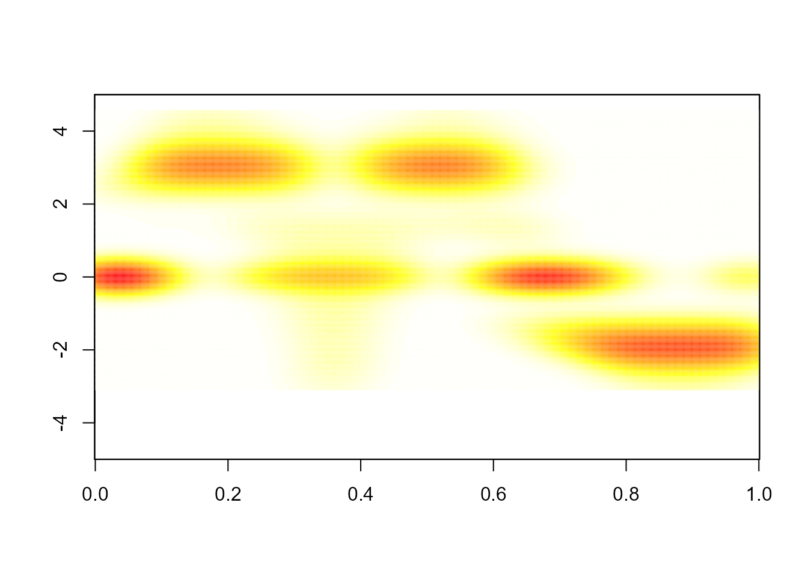
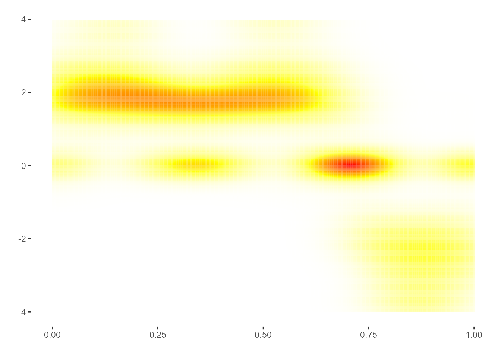
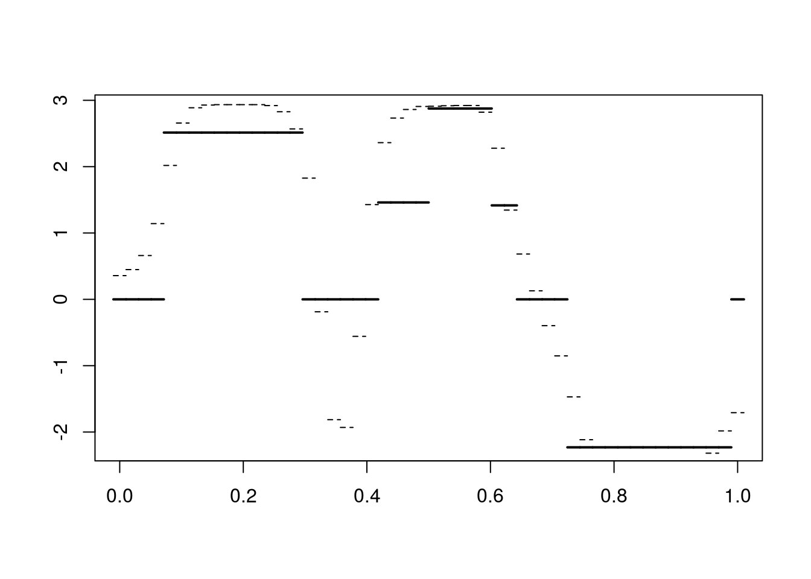
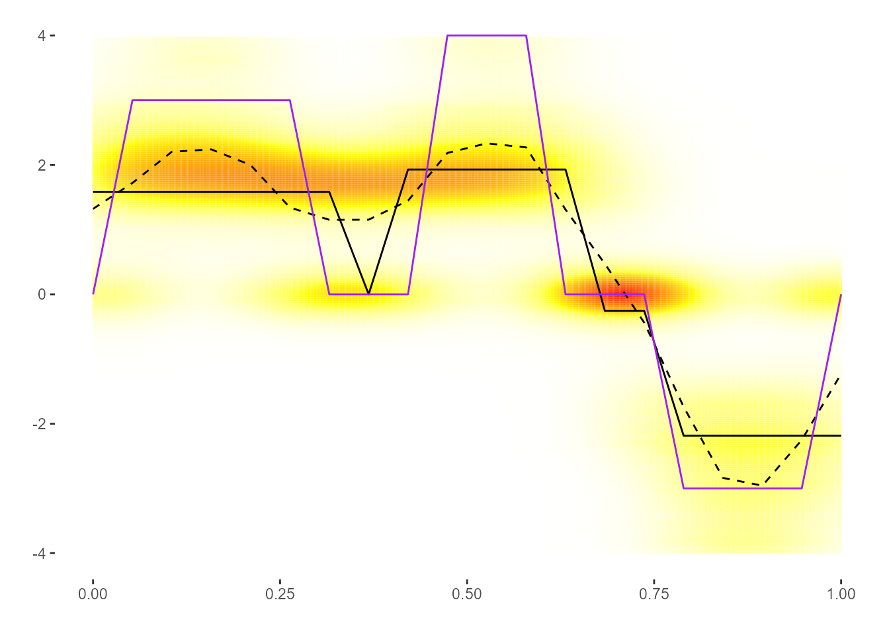
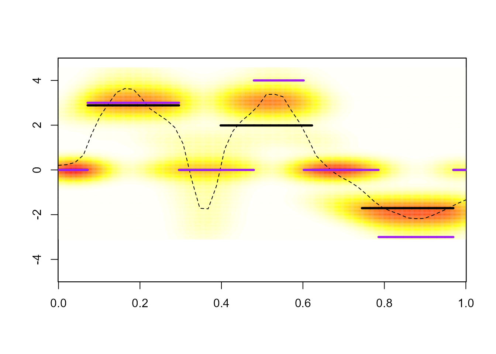

vignettes/BlissIntro.Rmd
BlissIntro.RmdThis vignette describes step by step how to use the BLiSS method. Below, you can find the following implemented features:
In order to simulate a proper dataset for Bliss application, some characteristics must be specified:
Based on these parameters, data can be simulated (curves \(x_{i}(.)\) and real values \(y_{i}\)) from the functional linear regression model by using the sim function, as suggested in the following chunck.
set.seed(1)
param <- list( # define the "param" to simulate data
Q=1, # the number of functional covariate
n=50, # n is the sample size and p is the
p=c(20), # number of time observations of the curves
beta_types=c("smooth"), # define the shape of the "true" coefficient function
grids_lim=list(c(0,1))) # Give the beginning and the end of the observation's domain of the functions.
data <- sim(param) # Simulate the dataIn order to apply the Bliss method, the main function to use is fit\(\_\)Bliss. This function provides the following outputs:
An important required argument of the previous function is param, which is a list containing:
Find below, an example of use of this function and a sketch of the structure of the returned object.
param <- list( # define the required values of the Bliss method.
iter=5e2, # The number of iteration of the main numerical algorithm of Bliss.
burnin=2e2, # The number of burnin iteration for the Gibbs Sampler
K=c(3)) # The number of intervals of the beta
res_bliss<-fit_Bliss(data=data,param=param)
#> ===========================================================
#> - Pretreatment.
#> - Model fiting.
#> Gibbs Sampler: Sample from the posterior distribution.
#> Initialization.
#> Determine the starting point.
#> Start the Gibbs Sampler loop.
#> Compute beta functions related to the posterior sample.
#> - Derive estimates.
#> Simulated Annealing (to get the Bliss and smooth estimates):
#> Functional Dimension 1/1
Functional Dimension 1/1 Repeat 1/5
Functional
#> Dimension 1/1 Repeat 2/5
Functional Dimension 1/1 Repeat 3/5
Functional
#> Dimension 1/1 Repeat 4/5
Functional Dimension 1/1 Repeat 5/5
#>
#> Compute the approximation of the posterior distribution.
#> Support estimation.
#> - Posterior quantities.
#> Compute the (log) densities of the posterior sample.
#> Fitting posterior y values.
#> Usual quantities.
#> ===========================================================
#> nb_param loglik BIC MSE
#> 11.0000000 12.8003098 17.4316334 0.2930481
#> ===========================================================
#> * Useful fields
#> $Bliss_estime, $smooth_estimate, $support_estimate, $alpha,
#> $beta_posterior_density, $posterior_sample, $beta_sample
#> * Useful post-treatment functions
#> image_Bliss(), interpretation_plot()
# Structure of a Bliss object
# str(res_bliss)This section presents how to obtain main graphical results (posterior quantities) derived from the Bliss method.
Considering Functional Linear Regression model (FLR), and the specific scalar-on-function case, the major model parameter to infer is the coefficient function \(\beta(.)\). The following chunck shows how to plot the posterior distribution of the coefficient function:
library(ggplot2)
image_Bliss(res_bliss$beta_posterior_density,param,q=1) 
Additionnaly to this plot, one could usually want to display a point estimate of the coefficient function (which is a function). By using the following code, you can access to: * Bliss estimate, a piecewise constant version of the coefficient function, and * the smooth estimate, the standard bayesian estimate of the coefficient function (standard means that it minimizes the posterior \(L^2\)-loss).
image_Bliss(res_bliss$beta_posterior_density,param,q=1) +
lines_bliss(res_bliss$data$grids[[1]],res_bliss$Bliss_estimate[[1]]) +
lines_bliss(res_bliss$data$grids[[1]],res_bliss$smooth_estimate[[1]],lty = "dashed")+
lines_bliss(res_bliss$data$grids[[1]],data$betas[[1]],col="purple")
The solid black line is Bliss estimate, the dashed black line is the smooth estimate and the solid purple line is the true coefficien function.
According to the scientific problematic, one could aim to infer the coefficient function, but it is possible to alternatively focus only on the support of the coefficient function. In this case, the sign and the magniture of the coefficient function could be considered as nuisance parameters. Therefore, the Bliss method provides a specific estimation procedure for the support of the coefficient function (which relies on the posterior distribution of the coefficient function). It consists in deriving the posterior probabilities \(\alpha(t|D)\), for each \(t\) in the domain \(\mathcal T\) of the functional data, which correspond to the probabilities (conditionnaly to the observed data) that the support of the coefficient function covers the time \(t\).
To plot the posterior probabilities, you have to use the following code :
plot(res_bliss$alpha[[1]],type="o",xlab="time",ylab="posterior probabilities")
From these posterior probabilities, the support estimate is derived by thresholding the probabilities. Without prior information guiding the estimation procedure, the default threshold is 0.5. The estimate support is then defined as the collection of time \(t\) for which the posterior probability \(\alpha(t|D) > 0.5\).
plot(res_bliss$alpha[[1]],type="o",xlab="time",ylab="posterior probabilities")
abline(h=0.5,col=2,lty=2)
for(i in 1:nrow(res_bliss$support_estimate[[1]])){
segments(res_bliss$support_estimate[[1]]$begin[i],0.05,
res_bliss$support_estimate[[1]]$end[i],0.05,col="red"
)
points(res_bliss$support_estimate[[1]]$begin[i],0.05,col="red",pch="|",lwd=2)
points(res_bliss$support_estimate[[1]]$end[i],0.05,col="red",pch="|",lwd=2)
}A resume of the support estimate is provided with:
res_bliss$support_estimate[[1]]
#> begin end
#> 1 1 6
#> 3 9 13
#> 5 16 19To avoid unnecesseray computational time, this section is not executed. You could figure out that the functions, objects and procedures are mostly similar to the previous one (single functional covariate case). The main differences are that:
param object, and
param <- list( # define the required values of the Bliss method.
iter=1e3, # The number of iteration of the main numerical algorithm of Bliss.
burnin=2e2, # The number of burnin iteration for the Gibbs Sampler
K=c(3,3)) # The number of intervals of the beta
res_Bliss_mult <- fit_Bliss(data=data,param=param)
image_Bliss(res_Bliss_mult$beta_posterior_density,param,q=1) +
lines_bliss(res_Bliss_mult$data$grids[[1]],res_Bliss_mult$Bliss_estimate[[1]]) +
lines_bliss(res_Bliss_mult$data$grids[[1]],res_Bliss_mult$smooth_estimate[[1]],lty = "dashed")+
lines_bliss(res_Bliss_mult$data$grids[[1]],data$betas[[1]],col="purple")
image_Bliss(res_Bliss_mult$beta_posterior_density,param,q=2) +
lines_bliss(res_Bliss_mult$data$grids[[2]],res_Bliss_mult$Bliss_estimate[[2]]) +
lines_bliss(res_Bliss_mult$data$grids[[2]],res_Bliss_mult$smooth_estimate[[2]],lty = "dashed")+
lines_bliss(res_Bliss_mult$data$grids[[2]],data$betas[[2]],col="purple")#> R version 4.3.2 (2023-10-31 ucrt)
#> Platform: x86_64-w64-mingw32/x64 (64-bit)
#> Running under: Windows 10 x64 (build 19045)
#>
#> Matrix products: default
#>
#>
#> locale:
#> [1] LC_COLLATE=French_France.utf8 LC_CTYPE=French_France.utf8
#> [3] LC_MONETARY=French_France.utf8 LC_NUMERIC=C
#> [5] LC_TIME=French_France.utf8
#>
#> time zone: Europe/Paris
#> tzcode source: internal
#>
#> attached base packages:
#> [1] stats graphics grDevices utils datasets methods base
#>
#> other attached packages:
#> [1] ggplot2_3.5.0 bliss_1.1.0
#>
#> loaded via a namespace (and not attached):
#> [1] gtable_0.3.4 jsonlite_1.8.8 highr_0.10 dplyr_1.1.4
#> [5] compiler_4.3.2 tidyselect_1.2.0 Rcpp_1.0.12 stringr_1.5.1
#> [9] jquerylib_0.1.4 systemfonts_1.0.5 scales_1.3.0 textshaping_0.3.7
#> [13] yaml_2.3.8 fastmap_1.1.1 R6_2.5.1 labeling_0.4.3
#> [17] generics_0.1.3 knitr_1.45 MASS_7.3-60 tibble_3.2.1
#> [21] desc_1.4.3 munsell_0.5.0 bslib_0.6.1 pillar_1.9.0
#> [25] rlang_1.1.3 utf8_1.2.4 cachem_1.0.8 stringi_1.8.3
#> [29] xfun_0.42 fs_1.6.3 sass_0.4.8 memoise_2.0.1
#> [33] cli_3.6.2 withr_3.0.0 pkgdown_2.0.7 magrittr_2.0.3
#> [37] digest_0.6.34 grid_4.3.2 rstudioapi_0.15.0 lifecycle_1.0.4
#> [41] vctrs_0.6.5 evaluate_0.23 glue_1.7.0 farver_2.1.1
#> [45] ragg_1.2.7 fansi_1.0.6 colorspace_2.1-0 rmarkdown_2.25
#> [49] purrr_1.0.2 pkgconfig_2.0.3 tools_4.3.2 htmltools_0.5.7